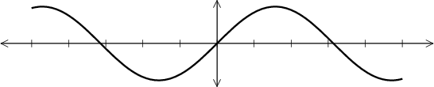
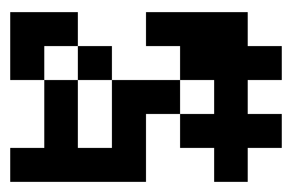
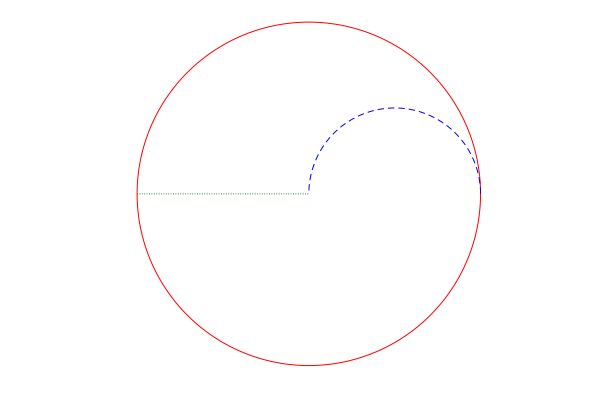

SimpleDrawing
This package provides some convenient drawing tools derived from the Plots module. It also defines the draw() function that can be extended by other modules such as DrawSimpleGraphs and HyperbolicPlane.
General Functions
newdraw()presents a blank canvas on which to draw (and erases anything that's already in that window).finish()ensures that the figure appears on the screen with aspect ratio equal to 1, and that we hide the axes, grid, and legend.draw()does nothing. It is a placeholder function for other modules to override.expand_canvas(factor=0.05)expands the drawing area.resize_gr_window(wide=800,tall=600)changes the size of the GR window.
Drawing Specific Shapes
draw_point(x::Real,y::Real;opts...)plots a point (small disk). This may also be invoked asdraw_point(z::Complex). Ifplistis a list of complex numbers, may also usedraw_point(plist)to draw all those points.draw_segment(x::Real,y::Real,xx::Real,yy::Real;opts...)draws a line segment from(x,y)to(xx,yy). May also be invoked asdraw_segment(z::Complex,zz::Complex).draw_vector(x::Real,y::Real)draws a vector from(0,0)to(x,y). A different base point may be specifieddraw_vector(x,y,basex,basey)in which case the vector starts at(basex,basey)and extends to(basex+x,basey+y). This may also be used with complex arguments:draw_vector(z)anddraw_vector(z, basez).draw_arc(x::Real,y::Real,r::Real,t1::Real,t2::Real;opts...)draws an arc of a circle centered at(x,y), with radiusr, and arcing between anglest1andt2.draw_arc(a::Complex,b::Complex,c::Complex;opts...)draws the arc with end pointsaandcpassing throughb.draw_circle(x::Real,y::Real,r::Real;opts...)draws a circle centered at(x,y)with radiusr. Alsodraw_circle(z::Complex,r::Real;opts...).draw_discworks just likedraw_circle, but the interior is filled. Try, for example,draw_disc(0,1,3; color=:yellow, linecolor=:red).draw_curve(pts;opts...)draws a curve through the points specified bypts, a one-dimensional array of complex numbers. By default, this gives a closed curve. To draw an open curve, usedraw_curve(pts,false;opts...)draw_rectangle(x::Real,y::Real,xx::Real,yy::Real;opts...)draws a rectangle with corners(x,y)and(xx,yy). Also available asdraw_rectangle(w::Complex,z::Complex).draw_polygon(xs, ys; opts...)draws a closed polygon based on the lists of real coordinatesxsandys. Also available asdraw_polygon(zs; opts)wherezsis a list of complex numbers.
Drawing Coordinate Axes
The functions draw_xaxis and draw_yaxis can be used to create axes for figure. We assume that the axes emanate from the origin.
draw_xaxis(x)draws an axis from the origin to(x,0).draw_xaxis(x1,x2)is equivalent to callingdraw_xaxis(x1)and thendraw_xaxis(x2).draw_xaxis()draws a pair of x-axes extended 10% further than the values returned byxlims(). The functiondraw_yaxis()has analogous behavior.- A call to
draw_axes()invokesdraw_xaxis()anddraw_yaxis().
The functions draw_xtick and draw_ytick can be used to make small tick marks on the axes.
draw_xtick(x,len)draws a small tick mark with total lengthlenat the pointxon the x-axis.draw_xtick(xlist,len)callsdraw_xtickfor the values inxlist.
If len is omitted, a default value is used. The function draw_ytick works analogously.
The size of the drawing area can be determined with the function corners which returns the lower left and upper right corners of the drawing area as a pair of complex numbers. (See xlims and ylims in the Plots module.)
Example
julia> using Plots, SimpleDrawing
julia> plot(sin,-5,5,linewidth=2,color=:black)
julia> draw_xaxis()
julia> draw_yaxis()
julia> draw_xtick(-5:5)
julia> finish()
Supporting Functions
find_center(a,b,c)returns the center of the circle that passes through
the three points (represented as complex numbers). Returns inf + inf*im if the points are collinear.
non_collinear_check(a,b,c)checks if the three points (represented as complex numbers) are noncollinear; returnstrueif so andfalseif they are collinear (including if two are the same).
Spying a Matrix
my_spy(A) creates a black-and-white image representing the matrix A in which nonzero entries are black squares and zeros are white squares.
For example, if the matrix is this:
julia> A
5×8 Array{Int64,2}:
1 1 0 0 1 1 1 0
1 0 1 0 0 1 1 1
0 1 0 1 1 0 1 0
0 1 0 1 0 1 1 1
1 1 1 1 0 0 1 0then my_spy(A) creates this image:

Example
using SimpleDrawing, Plots
newdraw()
draw_circle(1,1,2; color=:red)
draw_arc(2,1,1,0,pi; color=:blue, linestyle=:dash)
draw_segment(-1+im,1+im; color=:green, linestyle=:dot)
savefig("example.png")
Splines
The implementation of draw_curve relies on cubic splines. Let y be an n-long array of numbers. Then use one of these to create an interpolating spline:
S = Spline(y,:open)for an open-ended spline.S = Spline(y,:closed)for a periodic spline.
In both cases, S(1)==y[1] through S(n)==y[n]. For closed splines, however, S(n+1)==y[1] and so forth.
Note that while S can be applied like a function, if is not a Julia Function. Thus plot(S,1,4) won't work. To convert a spline to a callable function, use funk(S).
The derivative of S is available as S'. The derivative is also of type Spline; to plot its values over the interval [a,b], use plot(funk(S'),a,b).